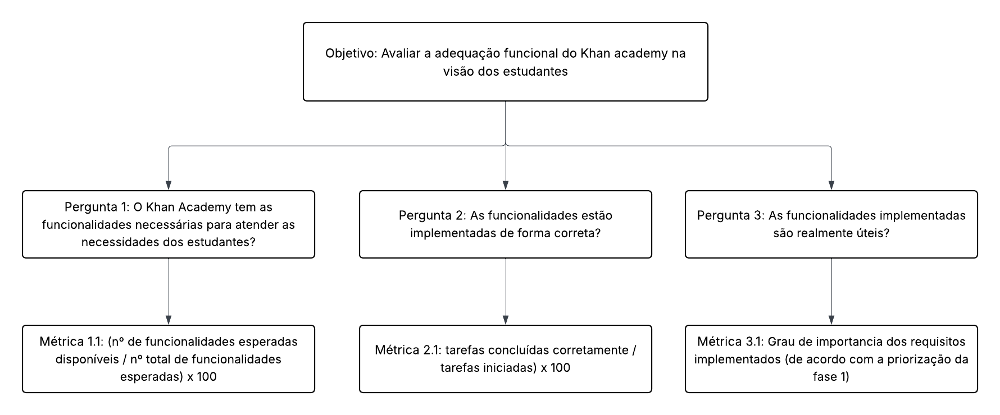

Adequação funcional
Objetivo de Medição 1: Adequação funcional¶
| Analisar | o Khan Academy |
|---|---|
| Para o propósito de | Avaliar |
| Com respeito a | Adequação funcional |
| Do ponto de vista da | Comunidade de estudantes |
| No contexto da | Disciplina de Qualidade de Software 1 (FCTE - UnB) |
Perguntas e Hipóteses de Medição¶
Para decompor o objetivo de análise da Adequação funcional, foram formuladas as seguintes perguntas e hipóteses.
Questão 1: Completude funcional
o Khan Academy tem as funcionalidades necessárias para atender as necessidades dos estudantes?
- Hipótese 1.1 (H1.1): Pelo menos 85% das funcionalidades utilizadas pelos estudantes estarão implementadas e operacionais no sistema.
Questão 2: Corretude funcional
As funcionalidades estão implementadas de forma correta?
- Hipótese 2.1 (H2.1): Pelo menos 90% dos casos de uso para estudantes serão executados corretamente, sem apresentar falhas ou erros.
Questão 3: Apropriação funcional
As funcionalidades implementadas são realmente úteis?
- Hipótese 3.1 (H3.1): Todas as funcionalidades classificadas anteriormente como críticas serão atendidas.
Seleção das Métricas¶
Questão 1: Completude funcional
-
Métrica 1.1: Cobertura de Funcionalidades Essenciais
- Definição: Percentual de funcionalidades essenciais (prioritárias para estudantes) que estão implementadas e operacionais no sistema.
- Fórmula:
(Nº de funcionalidades essenciais disponíveis / Nº total de funcionalidades essenciais esperadas) * 100 - Coleta:
- Identificar e listar as funcionalidades essenciais para estudantes.
- Verificar no sistema se cada funcionalidade está implementada e funcionando corretamente.
- Contar o número de funcionalidades essenciais disponíveis e o total esperado.
- Aplicar a fórmula para validar a H1.1.
- Pontuação de Julgamento:
Bom Regular Insatisfatório 95% a 100% 94% a 80% abaixo de 80% - Justificativa : A definição dos limiares de completude funcional baseia-se em princípios de gerenciamento de projetos. O ideal é 100% de cumprimento do escopo (Pressman), mas um resultado "Bom" (95-100%) é considerado um padrão pragmático de excelência, permitindo o adiamento de funcionalidades de baixíssima prioridade sem impactar o valor central do produto. A faixa "Intermediária" (80-94%) é associada ao Princípio de Pareto (80/20), sugerindo que o valor essencial do produto foi entregue, mas que ainda existe um "débito de funcionalidades" competitivo. Um resultado "Ruim" (abaixo de 80%) é um forte indicador de falha no planejamento, pois a ausência de mais de um quinto das funcionalidades esperadas provavelmente compromete a viabilidade e a proposta de valor do produto, sugerindo que funções essenciais foram omitidas.
- Propósito: Avaliar se o sistema atende às necessidades funcionais básicas dos estudantes.
Questão 2: Corretude funcional
-
Métrica 2.1: Taxa de sucesso da tarefa
- Definição: Percentual de tarefas concluídas corretamente em relação ao total de tarefas iniciadas.
- Fórmula:
(Nº de tarefas concluídas corretamente / Nº de tarefas iniciadas) * 100 - Coleta:
- Definir um conjunto representativo de tarefas comuns realizadas por estudantes.
- Monitorar a execução dessas tarefas, registrando se foram concluídas com sucesso ou apresentaram falhas.
- Contar o número de tarefas concluídas corretamente e o total de tarefas iniciadas.
- Aplicar a fórmula para validar a H2.1.
-
Pontuação de Julgamento:
Bom Regular Insatisfatório acima de 90% 80% a 90% abaixo de 80% -
Justificativa : A Taxa de Sucesso da Tarefa (TCT) avalia a eficácia de uma interface, considerando o percentual de tarefas concluídas corretamente. Resultados acima de 90% indicam um design robusto, com a maioria dos usuários atingindo seus objetivos sem dificuldades. Entre 80% e 90%, o sistema ainda é utilizável, mas apresenta pontos de atrito que podem gerar insatisfações e necessitam de ajustes. Abaixo de 80%, a taxa de falha é alta o suficiente para sinalizar problemas graves de usabilidade, que comprometem a experiência do usuário e os objetivos do produto.
-
Propósito: Avaliar a precisão e a confiabilidade das funcionalidades implementadas.
Questão 3: Apropriação funcional
-
Métrica 3.1: Relevância dos requisitos implementados
- Definição: Avaliação qualitativa baseada na priorização de requisitos.
-
Especificação: A avaliação desta métrica se baseia na análise da implementação das funcionalidades em relação à priorização definida na primeira fase deste trabalho. Os requisitos foram classificados de acordo com seu impacto e criticidade no fluxo de usuário principal do estudante (Ex: descobrir conteúdo, estudar, praticar e acompanhar o progresso).
-
Coleta:
- Revisar a lista de requisitos priorizados.
- Verificar se os requisitos classificados como críticos foram implementados.
- Registrar a presença ou ausência desses requisitos no sistema.
- Validar a H3.1 com base na implementação dos requisitos críticos.
-
Pontuação de Julgamento:
Bom Regular Insatisfatório 100% dos requisitos críticos para o fluxo principal implementados Fluxo principal implementado, mas com lacunas em etapas secundárias Qualquer requisito crítico que quebre o fluxo principal não está implementado * Justificativa : A avaliação classifica a eficácia com base na implementação dos requisitos críticos para o fluxo de aprendizado do estudante. Resultado Bom ocorre quando 100% dos requisitos essenciais estão implementados, garantindo uma jornada de aprendizado sem interrupções. Resultado Regular é quando o fluxo principal está atendido, mas faltam funcionalidades complementares, tornando a experiência funcional, mas não otimizada. Resultado Insatisfatório ocorre quando requisitos críticos estão ausentes, interrompendo o fluxo de aprendizado e impedindo que o software cumpra sua função essencial. -
Propósito: Avaliar se as funcionalidades implementadas atendem às necessidades essenciais dos estudantes.
Critérios para Julgamento¶
- Aceitável: ≥ 70% das métricas classificadas como "Bom". O sistema demonstra robustez e previsibilidade.
- Parcialmente aceitável: Entre 40% e 69% das métricas com nível "Regular" ou superior. O sistema funciona, mas pode apresentar instabilidades pontuais.
- Inaceitável: > 30% das métricas atingindo o nível "Insatisfatório". A estabilidade do sistema é considerada crítica e propensa a falhas.
Relação entre Adequação Funcional, Perguntas e Métricas¶
| Questão | Métricas Simplificadas | Tipo de Coleta |
|---|---|---|
| Completude funcional o Khan Academy tem as funcionalidades necessárias para atender as necessidades dos estudantes? |
- Cobertura de Funcionalidades Essenciais (%) | - Revisão manual do sistema para identificar funcionalidades essenciais implementadas versus esperadas |
| Corretude funcional As funcionalidades estão implementadas de forma correta? |
- Taxa de sucesso da tarefa (%) | - Monitoramento da execução de tarefas representativas por estudantes, registrando sucesso ou falhas |
| Apropriação funcional As funcionalidades implementadas são realmente úteis? |
- Relevância dos requisitos implementados (% de requisitos críticos implementados) | - Revisão da implementação dos requisitos críticos em relação à priorização definida |
Diagrama GQM - Adequação funcional (Representação Estrutural)¶

Bibliografia de Referência¶
-
Nielsen, J. (2012). Usability 101: Introduction to Usability. Nielsen Norman Group.
-
Pressman, R. S. (2016). Engenharia de Software: Uma Abordagem Profissional. 8ª Edição. McGraw-Hill.
-
Wiegers, K., & Beatty, J. (2013). Software Requirements. 3rd Edition. Microsoft Press.
-
International Organization for Standardization (2011). ISO/IEC 25010:2011 - Systems and software engineering — Systems and software Quality Requirements and Evaluation (SQuaRE) — System and software quality models.